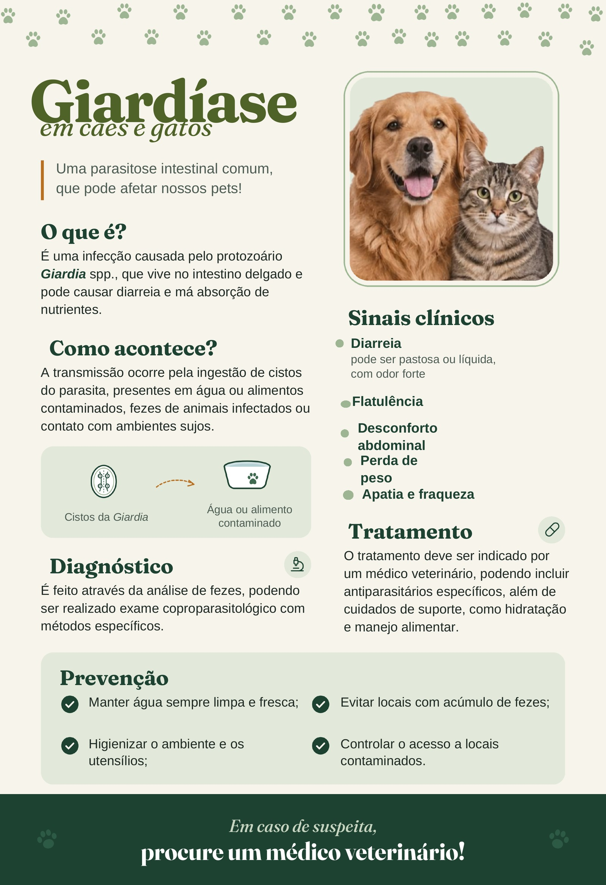
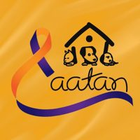
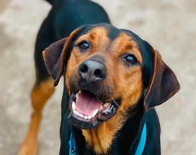
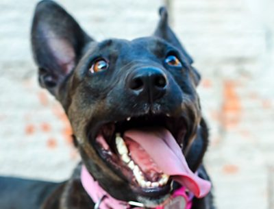
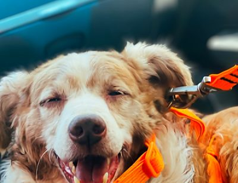
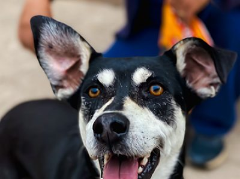

Cães e gatos esperando por um lar. Veja quem está disponível para adoção e como ajudar com ração, remédios ou qualquer valor.




Como vivem os cachorros do canil de Angatuba: a rotina, os cuidados de saúde e o novo pet contêiner.
Aponte a câmera do celular para abrir